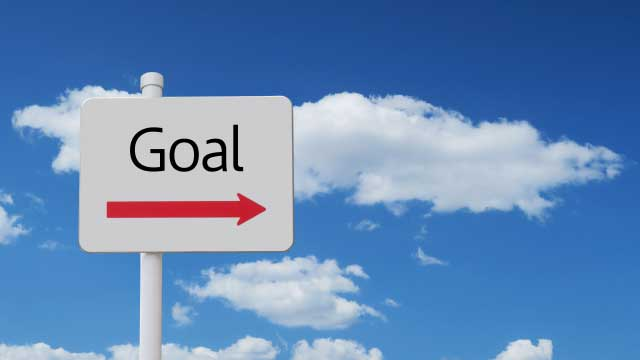

前回の記事で「望みはなかなか叶わない」という話をした。だがそれは自ら「実現」を遠ざけているからで本当は誰でも望みを叶える力をもっている。
いや、さらに言うなら、実は誰でも望みを叶えているのにそれに気づいていないというのが実際だ。どういうことだろう…？
たとえば水を飲みたいとする。台所へ行って水道の蛇口をひねってコップに注ぐ。あるいは冷蔵庫を開けてペットボトルの水を飲む。これも願望を実現したといえる。
水を飲みたい（望み）→水を飲む（実現）だから。
同じようにトイレに行きたい→トイレで用を足す。ラーメンが食べたい→ラーメン屋でラーメンを注文する。これらも「望みが叶った」といえば叶ったことになる。
「そんなの当り前じゃないか。」「そんなことで望みが叶ったなんて普通言わないよ。」
そう反論するだろうがそれはどうしてか。
望みを実現するというのは、人間関係の改善であったり仕事の成功や豊かさの実現、さらには我が子の合格といった困難を伴う、ある種理想の実現を指しているからだろう。
誰でもが簡単に叶えられる行為を「望みの実現」とは言わないからだ。
しかし屁理屈をコネるようだが、水を飲むことだって状況によっては実現困難な願望になり得る。震災のとき水道などのインフラがダメになり、店からも飲料水（ペットボトル）が消えたことは記憶に新しい。（トイレも流せなかった）こういう状況でやっと水を手に入れたら「水を飲むこと」は何よりも大きな実現の喜びを感じるだろう。
そんなの特殊な例と言うかも知れないが、それは日本のようにインフラが整備され水資源の豊富な地域にいるから言えるのであって、もしアフリカの砂漠に住む遊牧民だったらどうか。かつてはどこでも水を巡っての争いがあり戦争さえ起こった。
いや、今でも気軽に水を飲み（水を使い）、トイレで安全に用を足し、好きな料理を注文できることなど世界規模で考えれば奇跡的な確率といえる。「そんなこと」さえ夢のような出来事と感じる人々のほうが多いのだ。
だから「日本に住めて良かった」とか「文明国にいるから上のようなことは簡単に実現できる。あまりぜいたくな望みをもつな」と言ってるのではない。
日本に住んでいる以上私たちは誰もが簡単に「水を飲める」。ぞの一方で他の地域や状況によってそれはとても達成困難なミッションとなり得る。同じことは個々人の「願望実現」にも言えるということを言いたいのだ。
周囲を見渡してみて欲しい。
たとえばあなたの周りにも理想的な人生を送っているように見える人がいるのではないか。人間関係も良好、仕事も順調にこなすし起業すれば当るというように夢を次々と叶えているような人だ。よくあんな難しいことを達成できるなァとうらやましく感じる人だ。
そういう人は実は自らの願いを水を飲むことと同じと考えているのだ。
簡単なことにしてしまえば望みは叶う
考えてみれば大それた望みに限らず、私たちは「実現困難」と思っていないものほど簡単に実現するという経験をしているはずだ。
たとえば大勢の前で自分の考えを流ちょうに話せる人がいるが、彼にとってそれは当り前にできることに過ぎない。しかし人前で話すことが苦手な人もいる。そういう人には、大勢の前で何の負担もなく話せるなどおよそ人間わざとは思えない、とてつもない能力の実現者に見えるだろう。
だが、そういう人も家族や親しい友人たちの前では饒舌で流ちょうに話せるかも知れない。それなら「簡単なこと」だからだ。
これは逆に言えば望みを実現するためには「簡単なこと」にしてしまえば良いということになる。
「ステキなあの人に告白して恋人になろう」というより「ステキなあの人に毎朝あいさつして友だちになろう」と考えるほうが簡単であり、そうなって親しくなれば気がつけば恋人になっていたということもあり得るからだ。
いきなり「告白して恋人」ではハードルが高過ぎる。「拒わられたらどうしよう」「自分など相手にされないのでは」など不安や恐怖のほうが先に立ち結局二の足を踏んでしまう。
だからハードルを下げる。
これは目標のハードルを下げるのではなく、実現に向けての心の障壁を取り除くということである。
私たちは何かを実現しようとする際、とかく「ガンバッてやり遂げよう」と遠くにゴールを設定して必要以上に達成を困難なものにしている。
「これしかない」とか「目標を実現しなければ大変なことになる」という必死さや過剰な努力主義は「実現」のハードルを自ら高くしてかえって実現を難しいものにしてしまうのだ。
「じゃ、何でもカンタンなことだと考えればうまく行くのか」「ハードルを下げれば望みは何でも叶うのか」と言うかも知れない。
しかしカンタンなことだと「考えよう」としている時点で失格。ハードルを下げようと思考している時点でハードルは上がっているからだ。
易々と実現していることを思い出してみればよい。わざわざ「これはカンタンなことだ」とか「ハードルを下げれば叶うのだな」など考えないはずだ。気がつけば達成している。
水を飲むのと同じだ。どうやって台所へ行き水を飲むかなどと悩んだりするだろうか。思考や策を巡らせるだろうか。
人生は自分の選択しだい
望みを叶えることのできる人もこれと同じで、そもそも「難しい」とか「たやすい」とか考えていない。無思考なのだ。いや無心というべきか。
多くの人は何かを実現しようとすると「自分にできるかな」とか「失敗したらどうしよう」という不安がまず先に来る。そして「アレをするにはまずコレをしないと…」と途中経過や方法を考える。そして「他人はどう思うだろう。」「人に迷惑かけてはいけないし」などと悩み出し、実現までの道のりをとてつもなく険しい山頂のように見立てる。だから何かあるとすぐに挫折しやすい。
叶える人はこれと真逆だ。途中のプロセスなど考慮せず望む世界そのものに無心にフォーカスする。水が飲みたいので水を飲むという気楽さがある。彼らにも「困難」はあるが「どうにかなるだろう」と気にしない。
そう。どうにかなるだろう精神！
世に言う成功者は大抵このようなメンタリティの持ち主だ。
たとえば成功している企業経営者でも一時的に資金繰りに窮することはよくある。そんなときでも彼らは「来月までに二千万足りない？そんなもんどうにでもなるワイ」などと動じない。
これは一見無責任に見えるがそうではない。彼らには最終的なゴール（実現）がハッキリと見えているから、途中経過で起こる困難は一時的なものに過ぎないと看破しているのだ。現れては消えていく泡のように見なしている。彼らにとって失敗も失敗ではない。プロセスで生じる一つの出来事に過ぎない。
「どうにかなる」は、だから無責任でも投げやりな態度でもなく、物事を深刻にとらえず良い悪いを判断しない中立的な心のあり方といえるのだ。
楽観も悲観もなく価値判断にも左右されないから、好きなことやりたいことを自由に実現していけるという気軽さに満ちている。この「軽さ」が彼らに人も羨む「実現」をもたらしている。
何でも「水を飲む」ように簡単にすることはできないかも知れない。しかし私たちは本当は「簡単なこと」さえわざわざ複雑にして難しくしていることに気づけば、人生の様相は変わる。
物事はもっと肩の力を抜いて気軽に行えば意外と達成してしまうものだ。何かとうまくいかないとき、困難なとき「大丈夫。何とかなる」と心の緊張を解くことは強力な突破力となる。
「何とかなる」「どうにでもなる」というメンタリティは現状を打開する最強の武器といってよい。
多くの人はやりたいこと実現したいことがあっても「簡単に叶うはずがない」「家族がいるからムリ」とリスクばかり考え人生を重たいものにしている。
人生を重たいものにするか自由に気軽に望みを叶えていく場所にするかは選択次第だ。
どちらも自由に選べるとしたらどちらを選ぶだろう。どちらの人生が良いか悪いかではない。
どちらを選びたいかである。
私は後者を選んだ。人生は自分の選択次第だ。
この、選択できるということが重要だ。
それが自分の人生に責任をもつということだからだ。